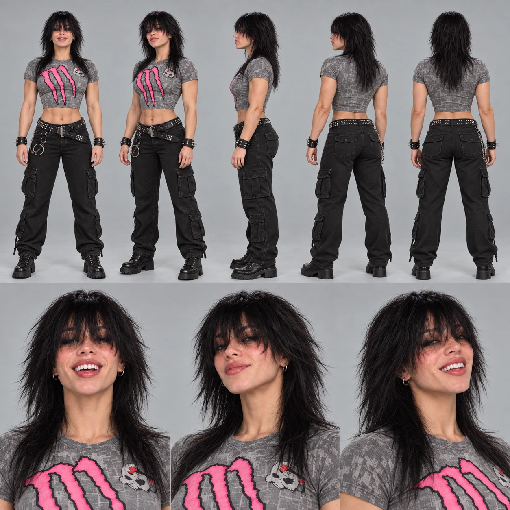

LOOK_001SIGNATURE THE ONE YOU KNOW
THE ONE YOU KNOW
THE ONE YOU KNOWSignature
STREET / EVERYDAY CHAOSThe grey top. The pink M. Black cargos and a familiar kind of confidence.
Dark hair. A flash of pink. Main-character energy.
A fictional face that keeps finding new places to exist.
 new world ↗
new world ↗A room becomes a stage. A mountain becomes a dance floor. A rooftop becomes a challenge. Erika's world is built on a recognisable character and a little beautiful chaos.
Follow the details behind the character: a familiar face, a wardrobe of alternate moods, and scenes that turn an idea into a little story.
See how the world is built
SAME FACE.Erika is an AI-created fictional character. Her stories move through dance, rivalry, action and everyday jokes. This independent visual archive explores the character through short films, look studies and creative play.
Pick a world, switch the cast, change the fit.
Save your version and let it live outside the studio.
Three playable looks. Eight character studies.
Find a mood, explore the details, or step into the studio.
THE ONE YOU KNOWThe grey top. The pink M. Black cargos and a familiar kind of confidence.
 WHEN THE LIGHTS GO LOW
WHEN THE LIGHTS GO LOWAll black, sharp edges and a leather layer. The same character after dark.
 TURN THE COLOUR UP
TURN THE COLOUR UPA flash of pink, a sporting silhouette and a look made for a change of scene.
Tap the heart on a look to keep it in your wardrobe.
Eight explorations of the character, from streetwear to velvet and alpine layers. Open a sheet to see every angle and expression.
Dance floors, impossible jumps and tiny everyday chaos.
Six scenes from the Erika Mercer video collection.
A fictional influencer with a recognisable face and a world of possible scenes. This is a look inside the visual language: reference, wardrobe, setting and motion.
Explore the creative processExplore the building blocks used in these visual studies. Choose a chapter to see the face, the look, the world or the motion.
Hair, expression, proportions and attitude. A character reference gives each new image a familiar point of departure.
Open the character archiveFour earlier visual compositions, reframed around the moving character and the reference sheets. Open a film for the full composition.
Erika is a fictional AI-created character whose visual world mixes short films, fashion studies, dance and improbable scenes.
The archive brings together character references, alternate outfits, scene composition and video. The four chapters above show those pieces separately.
Open Studio, choose a setting, character and outfit, then save a scene card or share a link to your version.
Yes. Open a reference sheet in Lookbook to explore the full turnaround and facial expressions. You can move between the eight sheets or save one.